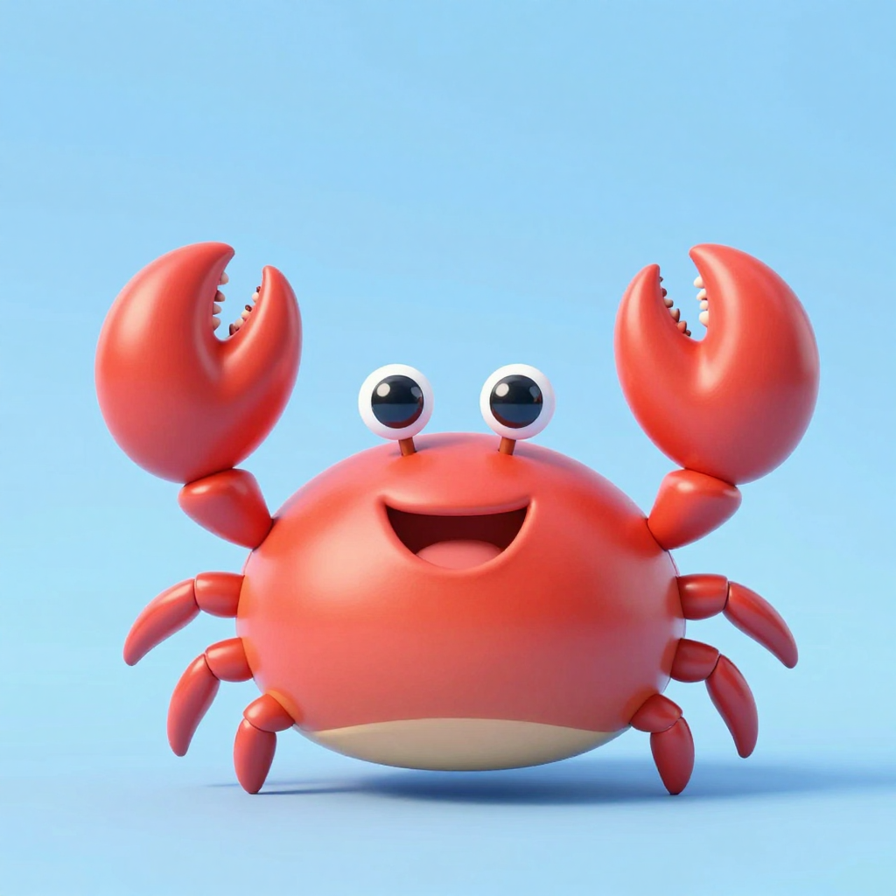
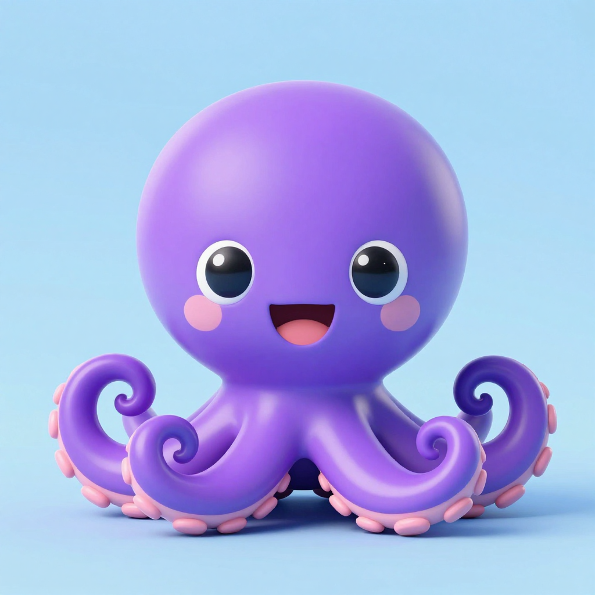
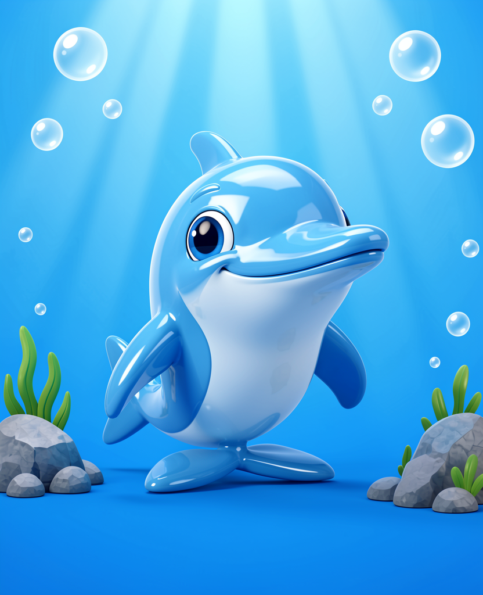
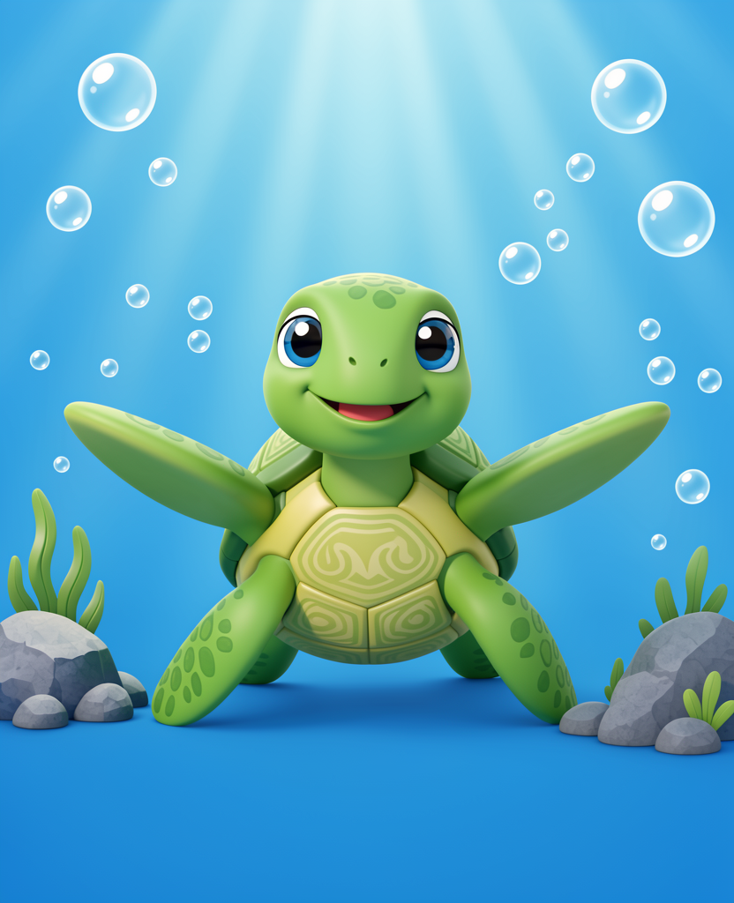

畫風樣本 · 第二輪
上一輪個問題係 prompt 用咗「cute cartoon baby crab」—— 模型真係畫咗個 BB 著蟹衫。今次改咗 prompt：寫明「ANIMAL character with a crab face, not human, no human skin」，再加 negative prompt 排除「human baby / costume / onesie」。
三個新方向，全部本機 ComfyUI 生成（冇收費 API）： P1 卡通吉祥物（簡化、最可愛） · P2 3D 動畫電影感（動物結構較準，教育性好） · P4 用你 reference 圖做參考（最似你原本套風格）你想我再出多啲： 可以每個方向出 4–6 個 seed 變體，或者試「繪本風／黏土風／毛公仔風／真實照片風」，你話聲。
P1 · 卡通吉祥物（Z-Image）8–10 秒/張
圓潤、簡化、眼睛大大，最適合 3 歲小朋友；背景乾淨可以直接剪影。

蟹（Z-Image） 
八爪魚（同一 prompt 模板，好一致）
優點： 最快、最可愛、跨動物一致；背景乾淨易剪影。
缺點： 簡化咗，動物特徵冇咁準。
P1 · 卡通吉祥物（FLUX.2）15 秒/張
同一個 prompt，換 FLUX.2 —— 膠質感更強、立體感更好。
優點： 質感最靚。
缺點： 慢少少；同 Z-Image 比風格會唔完全一致（所以整套要用同一個模型）。
P2 · 3D 動畫電影感（Z-Image）10 秒/張
寫明動物結構（殼紋、眼柄、八隻腳），出嚟似動畫電影角色，最「真動物」。
優點： 教育性好（小朋友睇到真正蟹嘅樣）；質感高級。
缺點： 會出現石頭等小道具；細隻動物未必夠可愛。
P4 · 用你嘅 reference 圖做參考（FLUX.2 + ReferenceLatent）推薦 12–16 秒/張
直接餵你 `reference art` 嘅圖做 style reference，再叫佢畫另一隻動物 —— 出嚟同你嗰 20 張 reference 幾乎同一個世界（藍色水下、泡泡、水草、石頭、膠質感）。

海豚（用蟹圖做參考） 
海龜（同一參考，風格一致）
優點： 最貼近你提供嘅參考風格；動物樣（唔會變 BB）；背景／泡泡／水草自動跟；12–16 秒一張。
缺點： 背景固定係「藍色水下」，陸地動物（獅子、駱駝）要另外做背景或者換參考圖。